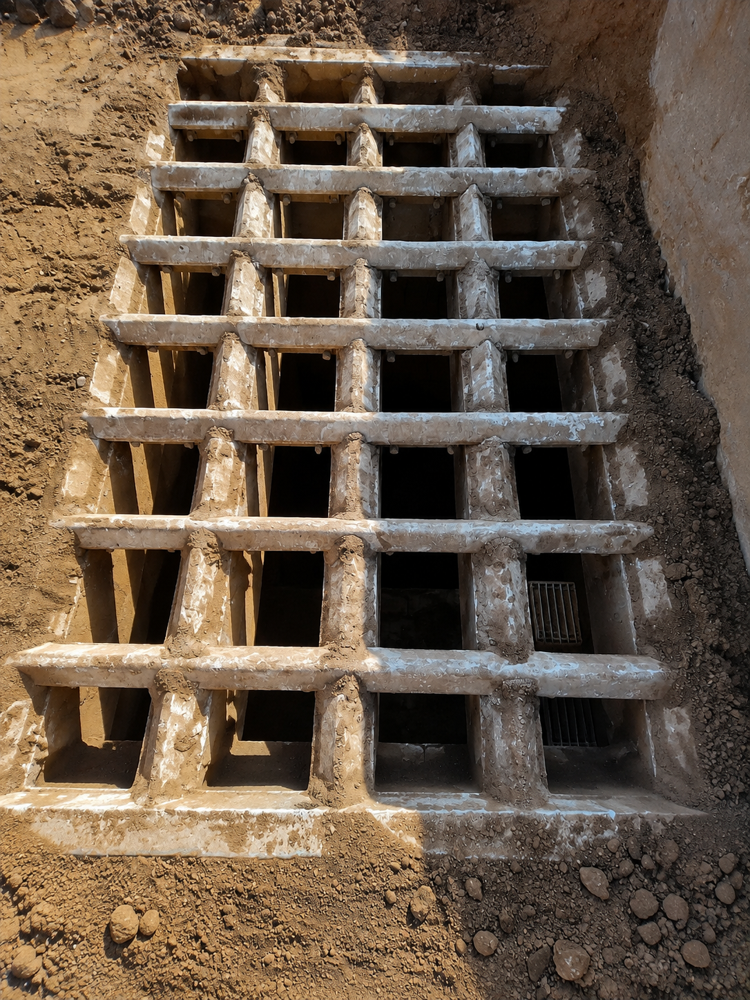

01
RECEPÇÃO
Grelha Fixa
Controle inicial da granulometria do ROM antes da alimentação do circuito.
Consulte os principais equipamentos da britagem primária, sua função no processo, características operacionais, fabricante, capacidade e princípio de funcionamento.

01Controle inicial da granulometria do ROM antes da alimentação do circuito.
 02
02
Responsável pela alimentação contínua e controlada do minério para o circuito.
 03
03
Distribui o minério entre as linhas A e B da britagem primária.
 04
LINHA A
04
LINHA A
Classificação granulométrica do minério antes da britagem por impacto na Linha A.
 05
LINHA B
05
LINHA B
Classificação granulométrica do minério antes da britagem por impacto na Linha B.
 06
LINHA A
06
LINHA A
Redução granulométrica do material retido na Peneira A.
 07
LINHA B
07
LINHA B
Redução granulométrica do material retido na Peneira B.
 08
08
Transporte contínuo do minério entre os equipamentos e as etapas da britagem.